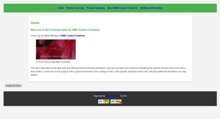

Knoblaunch, Nick

https://webpages.charlotte.edu/nknobla1/itis3135/client_project/Prime Checklist
- Links to Correct Page:
- File Structure: Appears to be missing the index page.
- Page Design: His design is nice, appealing, and very eye-catching. The layout is consistent and has good margins/padding.
- Page Structure: Everything is aligned to the left side of the page. Could use a little bit more information but good for the rubric
- Header: Looks good
- Head: Looks good
- Body: looks good
- Main: looks good
- Footer: looks correct
- CSS and Styling: Looks like an embedded style sheet
What to fix
I would fix the missing index page and embed a style sheet.
What I Liked
I really liked the dark mode button for your JS. I would have never thought to have added that.